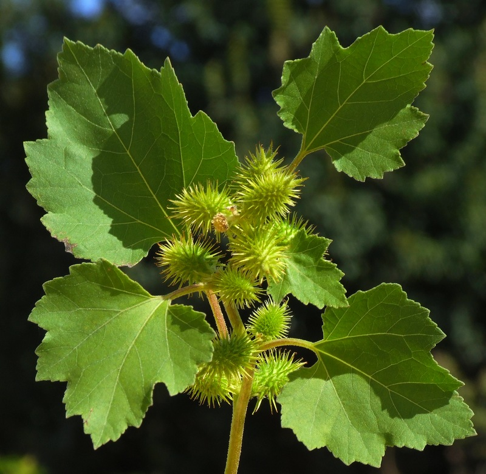

X
Xanthium
Le Xanthium est un genre végétal de la famille des Asteraceae, originaire d'Amérique et d'Asie orientale. On recense plus d’une dizaine d’espèces de plantes Xanthium.
Ces plantes, appelées lampourdes, considérées comme des herbes sauvages, sont utilisées pour traiter les symptômes de l'asthme bronchique et certaines maladies respiratoires.
